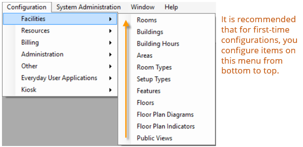

Configuration > Facilities
Before you can use to manage your organization’s events, you must configure core facilities that are specific to your organization. For example, before you can reserve a room, you must first configure the room. This menu is available on the top menu bar under Configuration>Facilities.

Note: Floor Plan Diagrams and Floor Plan Indicators are optional features used when your organization has the optional add-on, EMS Floorplan.
This section will include information on the following:
Note: If your organization has purchased and installed , then you can synchronize data from your Student Information System (SIS) such as your campus buildings, rooms., and room types. As a result, before you carry out any configuration of your facilities data, see the EMS Campus Configuration Guide.